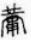
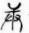

國朝朱謹撰。謹號雪鴻。崑山人。是編前有康熙己丑魏一川序。稱其歲易一稾。逾三十年。今觀其書。首列中庸圖十七。其分配五行者。多涉牽合。其解中字。謂中卽太極。卽伏羲一畫而縱之。其解天字。謂上一畫爲天。下一畫爲地。人居其中。一川序。又爲補解庸字。以爲古文作。古庚字。爲陽金。𤰃古鏞字。爲樂器而附於黃鍾之末。亦皆附會。其註以天命爲源。以無聲無臭爲歸宿。多涉恍惚。其中庸續論。又時時評論文法。如謂三重章。大哉章。是兩扇格局。不露排偶之類。併引而歸之時文矣。